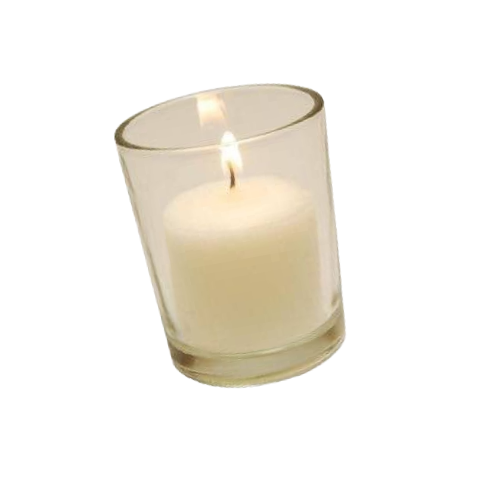
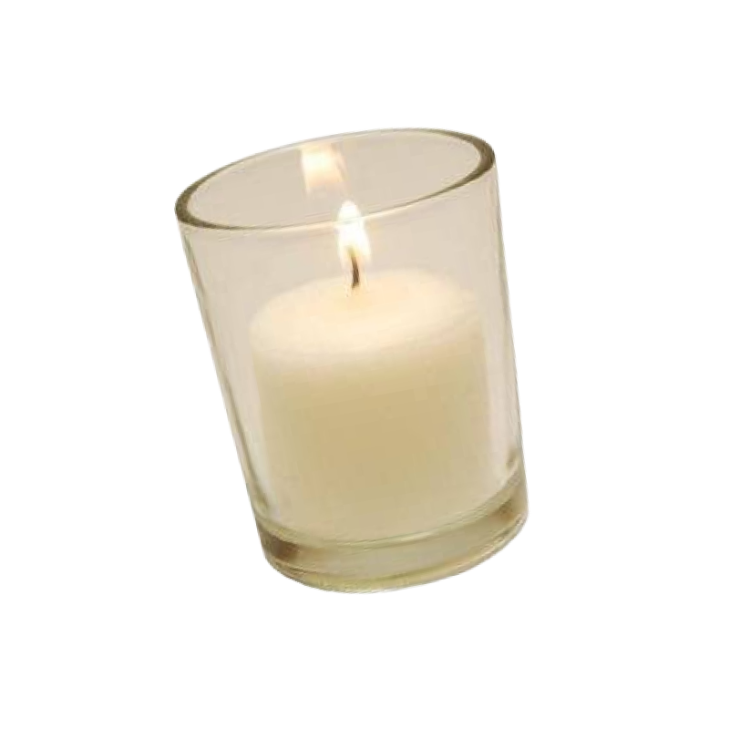

Представления о молодёжи, распространенные среди
старших поколений


 
И первое объяснение этих метаний, особенно популярное среди старших поколений, связано с тем, что у них попросту «нет проблем», они «пришли на все готовое». Иными словами, им уже не нужно бороться за материальное существование (в той мере, как это приходилось делать раньше их родителям). И поэтому молодежь «c жиру бесится».
У большинства уровень доходов, конечно, не столь велик. Но миллениалам меньше приходится заботиться о хлебе насущном, их родители обзавелись собственным жильем, накопили имущество, часть предметов длительного пользования стала намного дешевле и доступнее в относительных ценах — покупка телевизора, холодильника или даже автомобиля давно перестала рассматриваться как грандиозная проблема.

Хобби 2010-х

Игрушка пони из 2010-х
Игрушки 2010-х
Детская косметика 2010-х
Миллениалы не могут определиться со своими профессиональными и жизненными траекториями
Хобби 2010-х
Игрушка пони из 2010-х
Игрушки 2010-х
Детская косметика 2010-х
Направление развивалось как за счёт самодеятельных коллективов, так и за счёт официальных ВИА. Своего расцвета русский рок достиг в 1980-е, благодаря ослаблению цензуры в СССР.
В этот период были созданы рок-клубы, появились и приобрели популярность такие группы, как «Кино», «Алиса», «ДДТ», «Ария», «Браво», «Nautilus Pompilius», «Чайф», «Гражданская оборона», а уже известные, например, «Аквариум» и «Машина Времени», начали издавать альбомы официально.
Но главная проблема все же — не в отсутствии или закрытости возможностей, а, напротив, в их изобилии. Она порождается необходимостью выбора в условиях нарастающей неопределенности, которой все труднее управлять психологически.
Когда ты выбираешь одну возможность, тебе тут же начинает казаться, что ты упускаешь еще как минимум десять альтернатив, которые могут быть лучше и интереснее. Интуитивно ясно, что они ничем не лучше, но справиться с этим психологически нелегко.

Программирование

Медицина
Инженерия
Мода и дизайн

Программирование
Медицина
Инженерия
Мода и дизайн
Советская и российская телепередача, придуманная для детей в 1983 году. Посвящена проблемам молодёжи. За время своего существования передача трансформировалась из тележурнала в ток-шоу. Здесь чуть ли не впервые на телевидении начали поднимать проблемы молодёжи на понятном ей языке.
Современным программам «До 16 и старше» явно проигрывает, телевидение продвинулось далеко вперёд. Но в ностальгических целях пересмотреть некоторые выпуски можно, например серию с участием Виктора Цоя. В 2001 году программа вышла в последний раз, а в августе закрылась.

Ребенок смотрит мультики
В условиях нынешней растущей и давящей неопределенности многим молодым уже не хочется входить во взрослый мир, не хочется взрослеть, т.е. принимать стратегические, обязывающие решения, брать на себя ответственность. Хочется как-то отложить выбор профессии, выход на работу, отделение от родителей, обзаведение семьей, рождение детей. И вообще приятно побыть взрослым ребенком...
Период взросления, как известно, характеризуется постоянным экспериментированием и поиском новых возможностей. А поскольку жизнь стала более открытой и возможностей стало намного больше, естественно, возникает желание подобное состояние поиска продлить.
01

Фильмы и сериалы 10-х
02
«Шерлок»
03

«Игра престолов»
04
«Интерстеллар»
05
«Ла-Ла Ленд»
06
«Выживший»
Сегодня молодое поколение тоже максимизирует, но инвестиции все больше направляются в собственную жизнь и здоровье. А социальный успех в том числе достигается через физиологическое состояние. Ты здоров, следовательно, благополучен. Но важнее то, что возникло другое отношение к собственному телу и к телесности в целом. Речь идёт уже не о том, чтобы просто лечиться или предотвращать болезни, но о том, чтобы целенаправленно строить свое здоровое тело. Отсюда возрастающее негативное отношение к алкоголю и табаку, вообще вредным привычкам, к плотским излишествам или чрезмерному напряжению. Их заменяют умеренный фитнес и спа-процедуры.
Стремление достроить собственное тело во многом порождается растущим недовольством этим телом, характерным для все большего числа мужчин и женщин. Сегодня неудовлетворенность собственным телом кратно усиливают социальные медиа, где все пытаются представить себя в самом лучшем виде.

Тренажерный зал